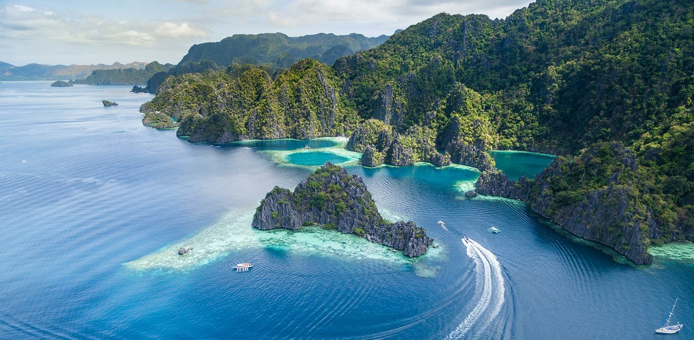
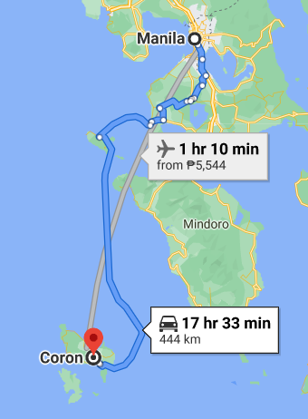
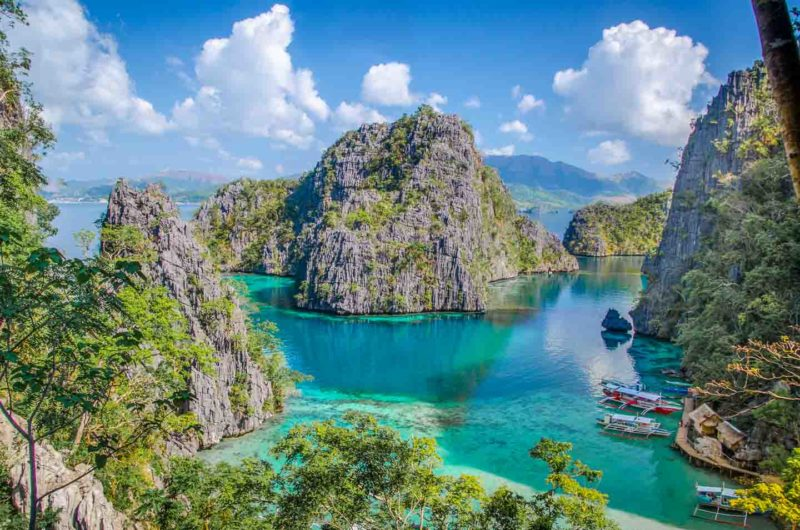
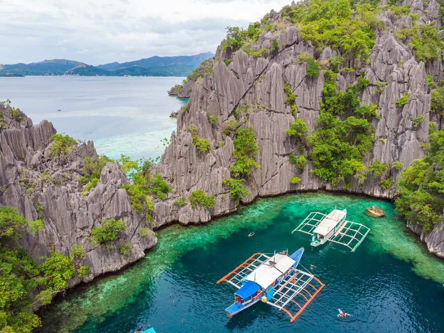
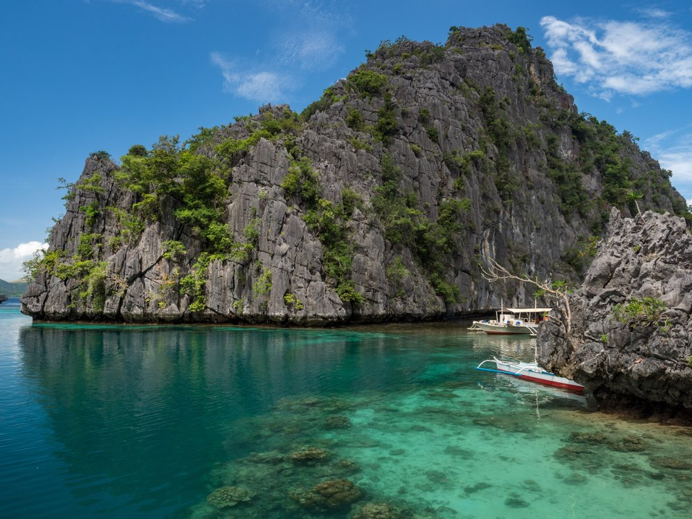

Coron, Palawan

Coron Island
is located a 30-minute boat ride from the town on Busuanga Island and is home to many of the top
sights in Coron. Here you can find Twin Lagoons, Kayangan Lake, Barracuda Lake, and many stunning
beaches and smaller lagoons.
How to get there?

The quickest
way to get on the island is to fly, Cebu Pacific and Philippines Airlines run flights several times
per day from Manila. If possible avoid the later flights, the Coron airport (Busuanga) doesn’t have
runway lights and flights can’t land after dusk.
Destinations in Coron

- Kayangan Lake is one of the primary Coron tourist spots. It is dubbed as the
“cleanest lake in the Philippines” and some consider it as the cleanest lake in Asia. The water here
is clean so it’s perfect for swimming. Kayangan Lake is bordered by tall limestone formations and if
you want a view of the entire place, you can just climb up a 300-step hill for a picture-perfect view.
It might be a bit of a trek but the views are worth the effort. The lake is warm and inviting perfect
for those who want to swim. That’s why tourists love Kayangan Lake.

- Twin Lagoons offer a one-of-a-kind experience that you shouldn’t miss. The lagoons are
essentially two small lakes that have been created inside limestone cliffs that meet the picturesque
turquoise water. When the tide is low, the surface of the water lays below a beautiful limestone
archway, where you can swim through to the other lagoon. As you swim, you’ll pass through warm and
cold spots that just add to the strangely wonderful experience. Don’t miss Twin Lagoons because this
is one of the best places to visit in Coron.

- Barracuda Lake is one of Palawan’s best scuba diving spots. The water of the Barracuda
Lake is a combination of freshwater and saltwater, which is why divers can experience temperature
shifts from cold to warm.